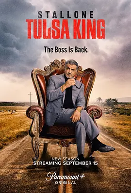

7.4
塔尔萨之王 第二季
Tulsa King Season 2
2024
美国
评分 7.4
导演:
克雷格·齐斯克
演员:
西尔维斯特·史泰龙 / 尼尔·麦克唐纳 / 马丁·斯塔尔 / 杰·威尔 / 马克斯·凯塞拉
类型:
剧情,犯罪
剧情简介
第二季从一场紧张的会议展开，Dwight 在塔尔萨辛苦建立的势力刚刚初具规模，却又被突如其来的外部威胁逼入新的混乱之中。堪萨斯城黑帮开始大举渗透，地方商界大佬则暗中操盘，希望借机削弱 Dwight 的影响力。在咖啡馆、仓库、停车场等细碎但危险的场景中，播下权力争夺的种子，每一次握手与对话都暗藏代价。Dwight 一边布置反击，一边努力修补自己与家人的裂痕。他频繁往返纽约和塔尔萨，两端都有人对他虎视眈眈；有时是旧部的忠诚松动，有时是陌生盟友的试探。随着更多派系加入争斗，塔尔萨的街道变得更加紧张：深夜仓库的运输车、空旷路段的尾随车辆、酒吧里交换情报的低声对话，都让整季笼罩在一股压迫与不安之中。本季着重展示 Dwight 的调整与反击。他不再只是硬碰硬的黑帮老将，而是逐渐展现谋略、耐心与对身边人的保护欲。与此同时，他的团队成员也面临各自的风险：有人被卷入枪击事件，有人陷入法律困境，有人被迫面对自己的底线。随着冲突升温，Dwight 明白自己不只是在争地盘，而是在与整个城市和自己的过往较量。剧集在行动场面与角色关系之间保持紧密平衡，通过不断升级的矛盾推动故事前进，也让“在陌生城市重新立足”这一核心命题更加清晰。第二季延续了首季的锋利节奏，让观众在暴力与算计交织的氛围中，看见一个黑帮老大试图重塑命运的全貌。